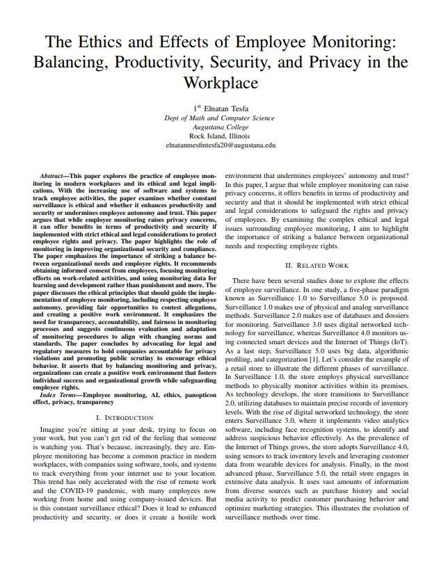

My Projects 💯
- All
- Python
- Java
- Database
- Web
- Research
Musipedia- The Comprehensive Music Database (HTML, CSS, JavaScript, Python, SQL, Flask, Replit)

Here is a link to the website:
Musipedia
Here is a link to the project:
Project
Files
3D Board Creator (Java, JavaFx, Scenebuilder, Unit Testing, and Software Development)
Here is a link to the project:
3D
Board Creator

EmojiVerse (React, HTML, CSS, JavaScript)
Here is a link to the website:
EmojiVerse
Here is a link to the project:
EmojiVerse Project
Ethiopian Recipe App (Java, Swing, User Authentication)

Here is a link to the project:
Ethiopian Recipe App
Memory Puzzle Game (Python, GUI Programming, Game Development, OOP)

Here is a link to the project:
Memory
Puzzle Game
Undependant Rock Island Research Project (Python, Google Earth, Microsoft Excel)


Here is a link to our project:
Undependant Rock Island
English to Amharic Language assessment (Python and PyQt5)
Here is a link to the project
Amharic Language Quizzer App

Student Grading Database (Microsoft Access, Queries, and Relational Database)

Here is a link to the project:
Student Grading Database


Exploring Technical Capabilities of Unmanned Aerial Vehicles
I wrote this research paper with a faculty member in the computer science department in my school. The paper was about exploring the capabilities of UAVs in different industries. We studied the risks and evaluated the security concerns of these UAVs and found surprising results. We also ended the paper recommending the next moves for these UAVs and suggested ideas for further research. Our paper was published by accepted and recommended for publication in Springer by the ICISS 2023. It was then accepted for virtual presentation. I will provide the link of the presentation that I gave down in the link below:
Here is a link to the presentation:
Presentation
Here is a link to the paper:
Research Paper
Prevention and Detection of Network Attacks: A Comprehensive Study
I wrote this research paper with a group of my computer science peers in my school. The paper was about studying the prevention and detection of Network Attacks. It focused on cyber attacks such as DDos Attacks, man-in-the-middle attacks, injection attack, brute Force Attack, and more. We also studied further how AI is used to create cyber attacks and how AI is used in cyber attack defense. Finally, we explored the consequences and presented our results. We found IRP preventions and Machine learning methods to detect cyber attacks. We realized that for different type of cyber attack, a different detection mechanism can more effective than the other. Our full paper that was submitted to ICDSST 2023 was accepted for publication in the Springer book series of LNBIP. It can be found in the E-book title, "Decision Support Systems XIII. Decision Support System in An Uncertain World: The Contribution of Digital Twins" on page 56.
Here is a link to the paper:
Research Paper
Here is a link to the e-book where you can find our paper:
E-book
The Effectiveness of Using Kinect Studio in the Study of Human Anatomy for Academic Purpose
I wrote this paper with my computer science peers where we explored the potential of using Kinect Studio, an interactive technology, as a tool for teaching human anatomy to students. In the paper, we discussed the multimedia and multi-sensory capabilities of Kinect and how it can provide fun, stimulating interactions that foster learning and increase student motivation. We compared the effectiveness of Kinect Studio to Azure Kinect SDK in terms of accuracy and range. We then conducted experiments to measure the accuracy of depth data and body mass index obtained from Kinect Studio and compared it to actual measurements taken with a tape measure and a LiDAR Camera. We conclude that Kinect Studio can be effective in measuring depth data and can be used to create virtual simulations of human anatomy for teaching purposes.
Here is a link to the paper:
Research Paper
Exploring the vulnerabilities of WiFi hacking through different lenses
I wrote this paper with my computer science peers where we discussed the vulnerabilities of Wi-Fi networks to hacking and stealing sensitive information. Then we explored the different types of Wi-Fi security protocols and compared and contrasted them. Afterwards, we highlighted the weaknesses of the Wired Equivalent Privacy (WEP) protocol and other protocols, which was phased out due to security flaws, and the importance of having strong passwords to protect against brute force attacks. We conclude by emphasizing the need for updating passwords frequently and avoiding default passwords to prevent hackers from accessing the system.
Here is a link to the paper:
Research Paper
The Ethics and Effects of Employee Monitoring: Balancing, Productivity, Security, and Privacy in the Workplace
I wrote this paper to explore the ethics and legal considerations of employee monitoring in our current society. I investigate whether constant surveillance is morally acceptable and if it improves productivity and security or damages employee autonomy and trust in light of the growing usage of software and systems to track employee activity. I argue that although employee monitoring presents privacy issues, it can have positive effects on productivity and security if done so while adhering to rigorous moral and legal guidelines that safeguard employee rights and privacy.
Here is a link to the paper:
Research Paper